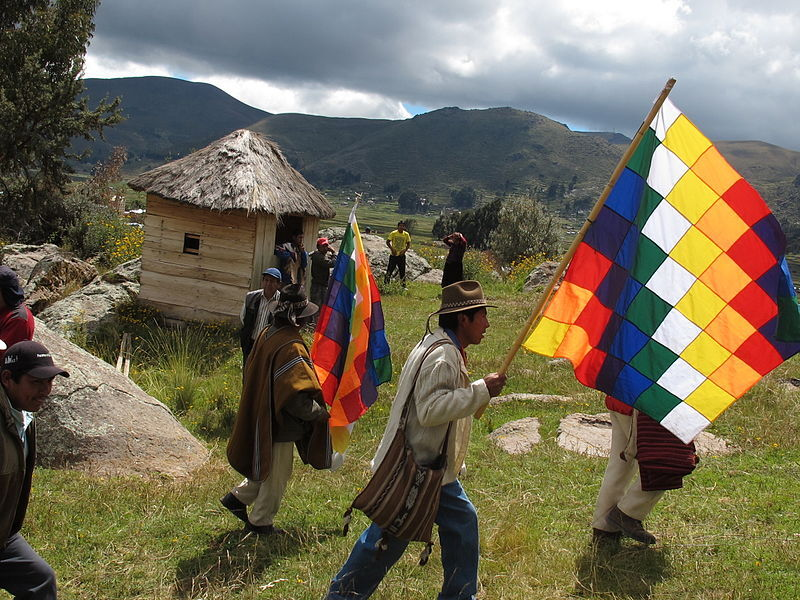
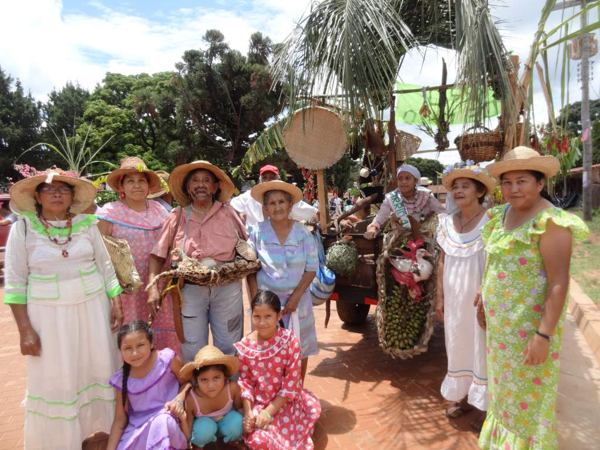
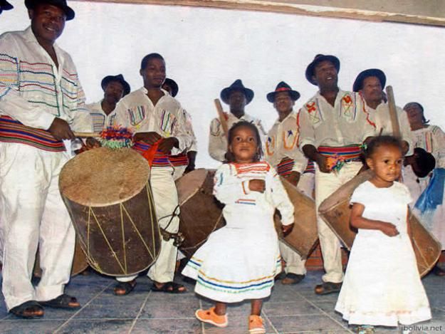
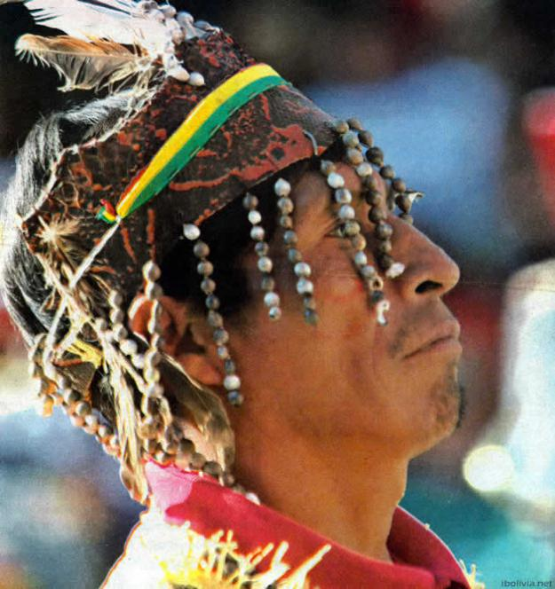
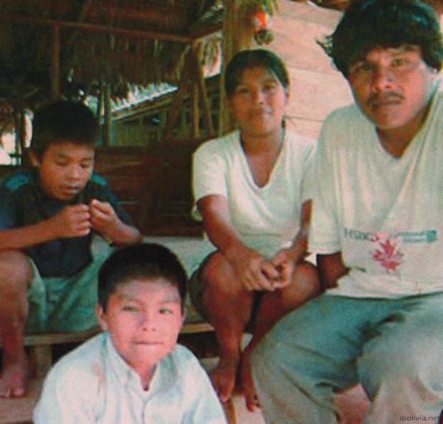
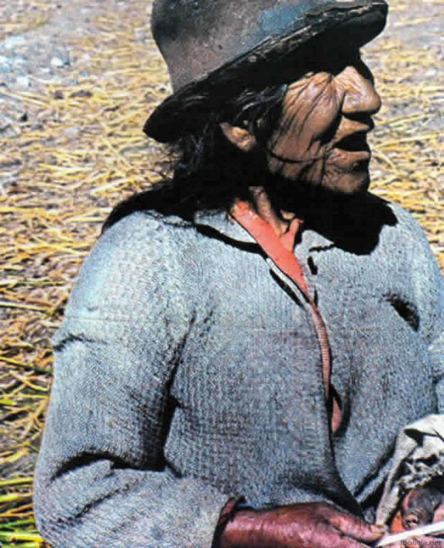
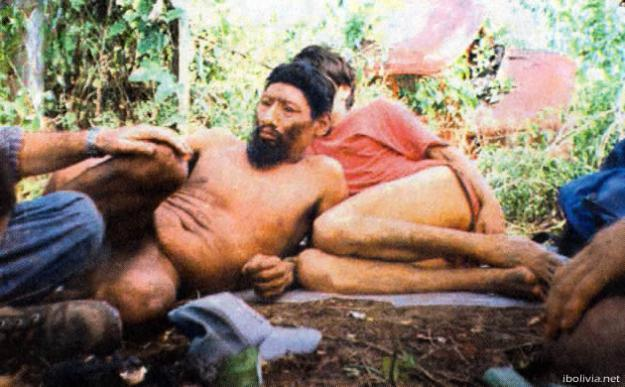
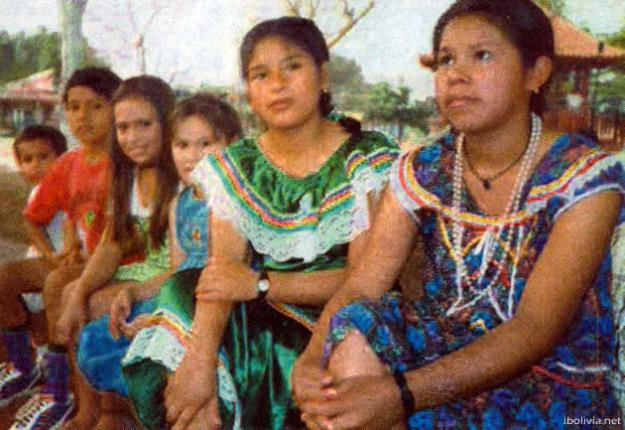

En Bolivia, la lengua quechua es hablada por más de 2 millones de personas en los departamentos
del occidente del país,
principalmente en su forma sureño. El gobierno nacional ha desarrollado una norma para la edición
de las publicaciones
oficiales.

AYMARA
El Aymara es un pueblo andino milenario dedicado al pas- toreo y a la agricultura, que tiene su origen alrededor del
lago Titicaca, comprendiendo lo que en la actualidad es parte de Bolivia y Perú, norte de Chile y norte de Argentina.

CHIQUITANO
Chiquitano o monkox es un pueblo amerindio, nativo de la Chiquitanía, sabana tropical del departamento de Santa Cruz,
Bolivia, donde actualmente vive la mayoría de los chiquitanos. Minorías residen en la ciudad de Santa Cruz de la Sierra,
en el departamento de El Beni, y también en el estado de Mato Grosso, en Brasil.

Afrobolivianos
La unidad familiar es de vital importancia entre los afrobolivianos debido a la segregación que existe por su color.
Esto refleja su cerrada organización étnica, dentro de la cual mantienen vivos aún rasgos de su cultura de origen.

Los Mosetén
En el marco de la Ley 1715, los mosetén lograron hace un tiempo su tierra comunitaria de origen (TCO), titulada, en la
zona de Inicua, Santa Ana y Muchanes, en los departamentos de La Paz y Beni.

Reyesanos
Debido a que la cantidad de reyesanos o maropas —como también son conocidos— es muy baja, y por consiguiente su
presencia e influencia es mínima, es poca la información que se tiene del pasado y origen del grupo étnico asentado en
Beni y parte de Pando.

Los Urus
Los pueblos chipaya, murato e hiruito, todos asentados en el territorio de Oruro, a orillas de los lagos Uru Uru y
Poopó, están encasillados como un solo grupo étnico. Su trascendencia siempre fue muy escasa a raíz del dominio
expansivo aymara que perduró durante todo el tiempo de la Colonia.

Los Yuquis
Hasta inicios del siglo pasado, fue común entre los yuquis un sistema de estratificación social de amos y esclavos, o
por herencia u orfandad. Pero luego de la influencia de los evangelizadores se conformó la típica familia nuclear (de
fuertes lazos entre parientes directos) de pareja monogámica.

Joaquinianos
La organización social básica de los joaquinianos es la familia básica compuesta por el padre, la madre y los hijos.
Asimilados por completo y ya hace varias décadas a la vida citadina y la sociedad occidental, el catolicismo es la base
de su credo, aunque algunos cultos protestantes entraron con fuerza en los años recientes en San Joaquín, Beni, y
algunas comunidades aledañas.
REGISTRA TUS DATOS PARA RESERVAR UNA VISITA A UNA DE ESTAS ETNIAS
¿Desea guardar la informacion?
Una vez guardada la informacion no podra modificar la misma